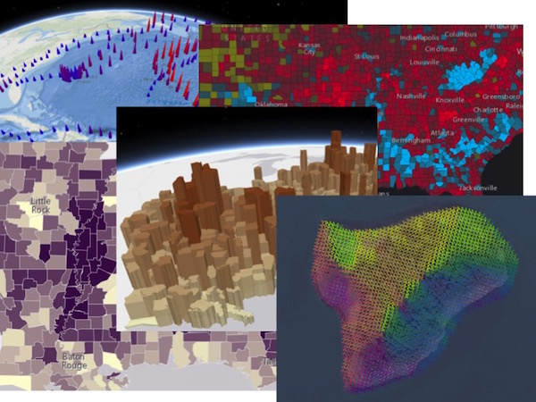

Visualization Overview
Introduction
This topic provides an overview of the various workflows you can use to define or change the visualization of features in one of the following layer types: FeatureLayer | SceneLayer | MapImageLayer | CSVLayer | StreamLayer

No matter which geometry type (points, lines, polygons, meshes) you wish to display in your application, your decision for how to depict the data comes down to one of two basic scenarios:
Location only - In this scenario, all visual properties of the symbol (e.g. size, color, opacity, texture, etc.) representing each feature are fixed. The primary purpose of the visualization is to show where a feature is located.
Thematic data-driven symbolization - The visualization of each feature (e.g. size, color, opacity, texture, etc.) is driven by, and therefore, depends on attribute data returned from one of the following sources:
- Field value (and optional normalization field) - Field values can determine the visual properties of the symbol. Visualizations created with field values can be persisted in web maps/scenes and exported to JSON.
- Arcade expression - An expression evaluating to a value. This expression may be persisted and shared to items on ArcGIS Online or ArcGIS Enterprise portal. Visualizations created with Arcade expressions can be persisted in web maps/scenes and exported to JSON.
Location-based and data-driven visualizations can be created in one of three primary workflows. The following reflects the recommended order in which to create and change layer visualizations.
ArcGIS Online tools
The ArcGIS Online map viewer and scene viewer provide a simple UI for altering the visualization of layers in a number of ways. Users can easily visualize features with a single symbol or drive color, size, opacity, and/or rotation based on the values returned in a layer's field(s) or a given Arcade expression.

The layer styling tools available in ArcGIS Online allow you to easily explore different visualizations for a given layer's data. The following ArcGIS blog posts discuss how to create and save visualizations to layer items and web maps:
- Visualizations driven by field values: How to Smart Map in 3 Easy Steps
- Visualizations driven by Arcade expressions: Use Arcade Expressions to Map Your Ideas
Once a visualization is saved to the layer item, you can load it directly in your application from the layer item...
const layer = new FeatureLayer({
portalItem: {
id: "d7892b3c13b44391992ecd42bfa92d01"
}
});
map.add(layer);
...web map item or web scene item.
// load the web map
const webmap = new WebMap({
portalItem: { // autocasts as new PortalItem()
id: "e691172598f04ea8881cd2a4adaa45ba"
}
});
// Set the WebMap instance to the map property in a MapView.
const view = new MapView({
map: webmap,
container: "viewDiv"
});
The following samples demonstrate how to load layers from web maps, web scenes, or directly from ArcGIS Online using the portal ID:
Smart Mapping APIs
The ArcGIS Online visualization tools are built on top of several APIs for generating renderers based on color, size, or both with "smart" default symbols based on the summary statistics of the dataset and the basemap. These APIs and the visualizations generated from using them are often referred to as Smart Mapping. The following objects contain methods generating visualizations with smart defaults:
- colorRendererCreator
- sizeRendererCreator
- opacityVariableCreator
- typeRendererCreator
- univariateColorSizeRendererCreator
- predominanceRendererCreator
- relationshipRendererCreator
- locationRendererCreator
The methods exposed by these objects may be used in conjunction with the following slider widgets:

Generally, these methods should not be used in most production apps. Rather, they were designed for specific use cases in which app developers can use the renderer generator APIs and slider widgets to create apps that allow users to do the following:
- Explore unknown data in layers. In most cases, the tools in ArcGIS Online already allow users to do this. However, you can write apps to customize behavior for data exploration purposes. See this blog post for an example of this.
- Create or design visualizations for layers based on a field value. The app can provide a way for the user to save the visualization back to the portal item or export it as JSON to load in other web apps.
The following samples demonstrate how you can use the renderer generator functions together with the slider widgets.
- Generate continuous color visualization
- Generate continuous size visualization
- Generate univariate continuous size and color visualization in 3D
- Multivariate data exploration
Be sure to also check out the other Smart Mapping samples available in the documentation.
Manually defined renderers
Finally, you may define or alter a layer's visualization programmatically with the renderer classes. The overview for creating visualizations programmatically outlines the renderers available in the API, how they are constructed, and the various use cases for which they were designed.
To change a renderer's symbol or any other renderer property, you must first clone the renderer then change the property and reset the new renderer back on the layer.
// clone the renderer
var renderer = layer.renderer.clone();
// change the title of the renderer in the legend
renderer.legendOptions = {
title: "Population density"
};
// set the altered renderer back on the layer
layer.renderer = renderer;